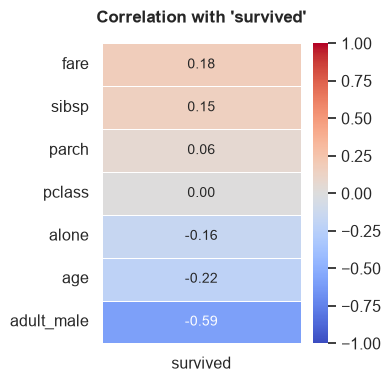
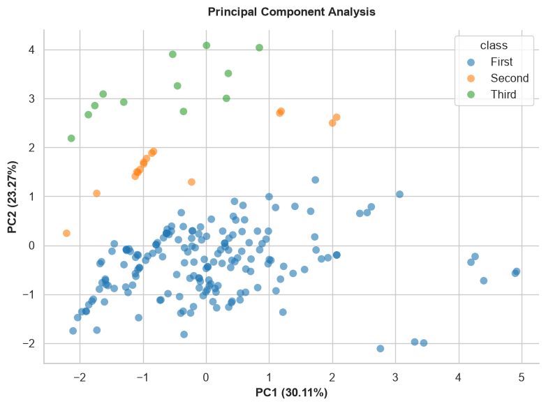
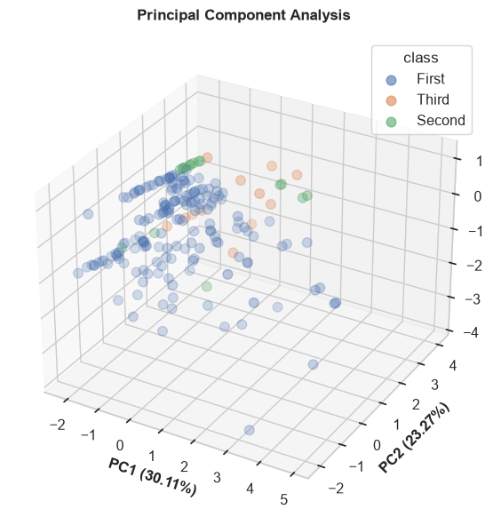
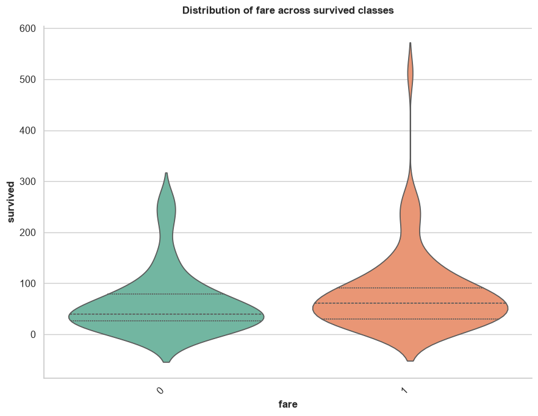
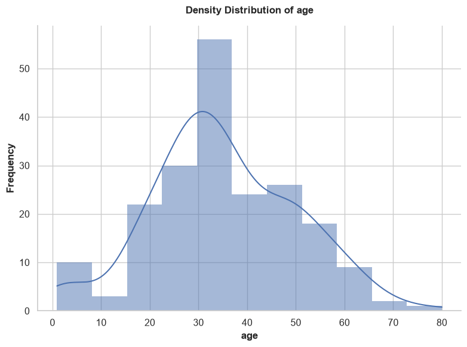
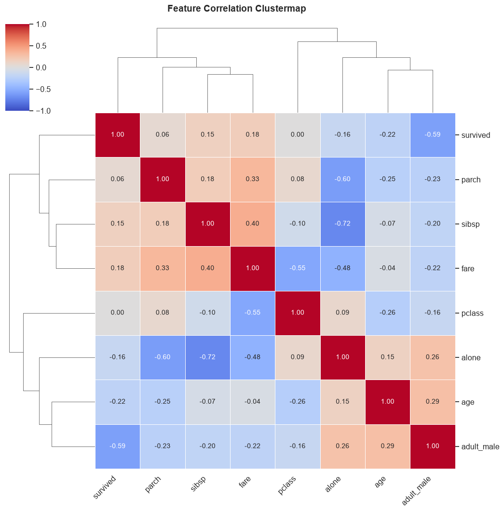

Data Visualization (Visuals)
Data visualization is crucial for exploring relationships, distributions, and underlying patterns within your dataset. The Visuals methods in KPX Tabular provide robust, production-ready plotting functions designed to instantly generate high-quality insights with minimal code.
Available Methods at a Glance
Visual Methods:
- corr_map()
- pca_plot()
- relationship_map()
- distribution_map()
- feature_cluster_map()
Visual Methods
corr_map()
Generates a heatmap displaying the correlation matrix of numerical features. If a target variable is specified, it plots the correlation of all other features directly against the target.
Parameters:
- target (str, optional): Specific target column to compute correlations against.
- ignore_cols (list, optional): List of column names to explicitly exclude from the correlation map.
- method (str, default="spearman"): Correlation method ("pearson", "kendall", "spearman").
Example:
# Plot correlations specifically against 'survived'
tab.corr_map(target="survived", method="spearman")

pca_plot()
Performs Principal Component Analysis (PCA) and visualizes the variance captured in reduced dimensions. Useful for dimensionality reduction analysis.
Parameters:
- input_cols (list, optional): Specific numerical columns to use for PCA. If None, uses all numeric columns.
- target (str, optional): Categorical target column used to color-code the data points.
- n_components (int, default=2): Number of PCA components to plot (2 or 3).
- sample_space (int, optional): Limit the number of rows plotted to speed up rendering for large datasets.
- figsize (tuple, default=(8, 6)): The figure dimensions.
Example:


relationship_map()
Automatically generates appropriate bivariate plots to show the relationship between input features and a specific target variable. It intelligently chooses scatter plots, box plots, or count plots based on whether the variables are numerical or categorical.
Parameters:
- target (str): Required. The target column to compare everything against.
- input_cols (list, optional): Specific columns to plot against the target. If None, uses all columns.
- ignore_cols (list, optional): List of column names to explicitly skip (e.g., IDs or names).
- sample_space (int, default=1000): Subsamples data for performance.
- figsize (tuple, default=(9, 7)): The figure dimensions.
Example:

distribution_map()
Generates univariate distribution plots for your features. It automatically selects histograms (with density curves) for numerical data, and count plots for categorical data. It contains built-in logic to automatically skip useless identifiers (e.g., columns containing 'id', 'ticket', 'uuid', 'hash', 'url') and high-cardinality nominals.
Parameters:
- cols (list, optional): Specific columns to plot. If None, plots all eligible columns.
- ignore_cols (list, optional): List of column names to explicitly skip.
- sample_space (int, default=1000): Subsamples data for performance.
- figsize (tuple, default=(8, 6)): The figure dimensions.
Example:

feature_cluster_map()
Generates a hierarchically-clustered heatmap of correlations. This powerful visualization groups highly correlated features together, making it incredibly easy to identify multicollinear clusters that could destabilize machine learning models.
Parameters:
- ignore_cols (list, optional): List of column names to skip.
- method (str, default="spearman"): Correlation method ("pearson", "kendall", "spearman").
- figsize (tuple, default=(10, 10)): The figure dimensions.
Example:
